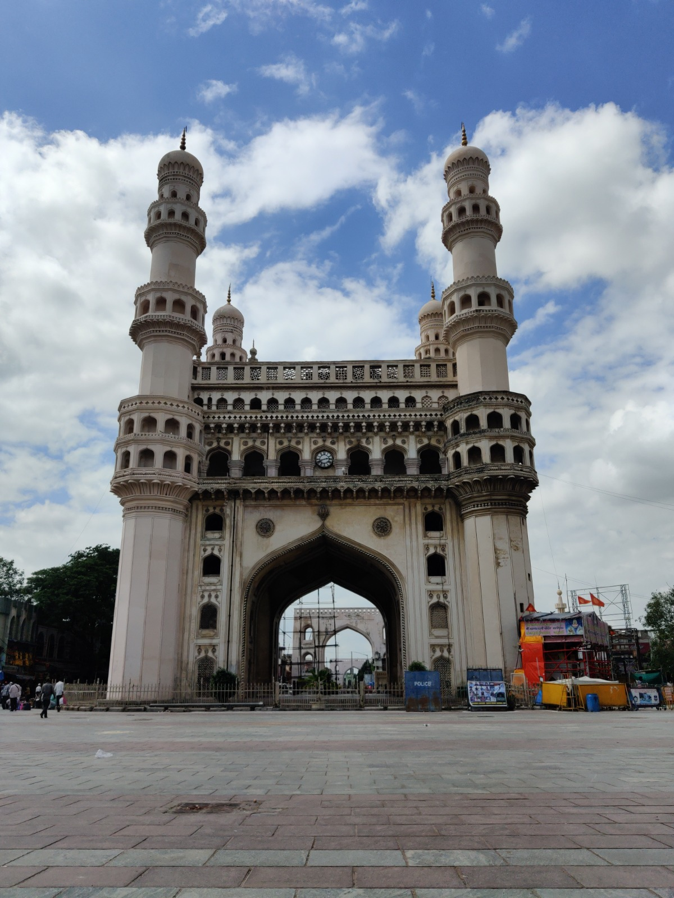
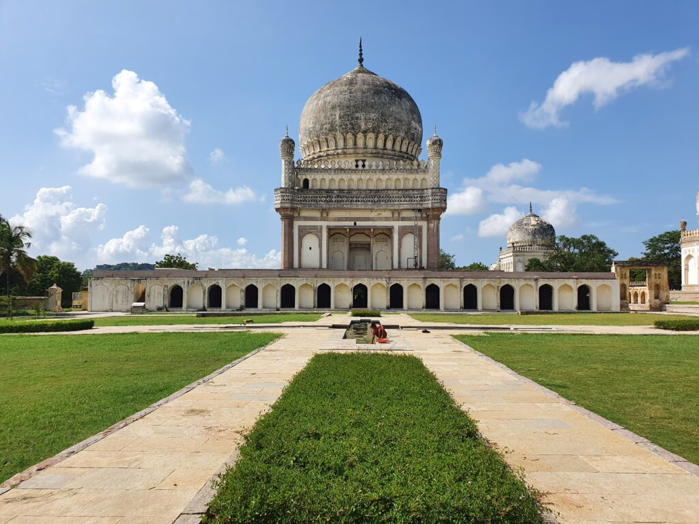
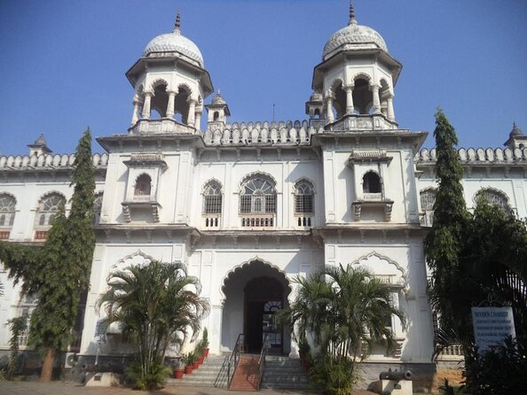

The Charminar
Add ticket
The Charminar's long history includes the existence of a mosque on its top
floor for more than 425 years.
Chowmahalla Palace

Add ticket
Chowmahalla Palace or Chowmahallat is the palace of the Nizams of Hyderabad State
in Hyderabad, Telangana, India.
It was the seat of the Asaf Jahi dynasty and was the
official residence of the Nizams of Hyderabad while they ruled their state.
Qutub Shahi Tombs
Add ticket
The Qutub Shahi Tombs are located in the Ibrahim Bagh, close to the famous
Golconda Fort in Hyderabad, India.
They contain the tombs and mosques
built by the various kings of the Qutub Shahi dynasty.
Telangana State Archaeology Museum
Add ticket
Telangana State Archaeology Museum or Hyderabad Museum is a museum located
in Hyderabad, India.
It is the oldest museum in Hyderabad